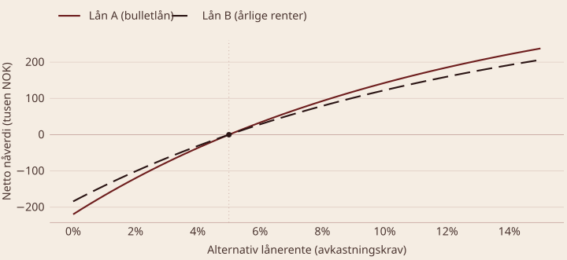
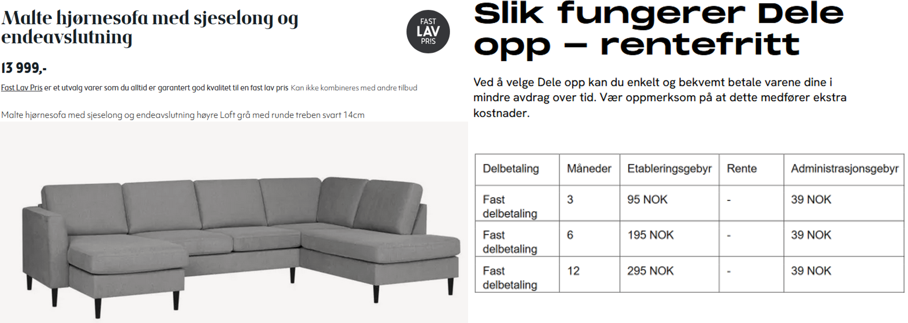

BED3 — Investering og finans · Forelesning 5
Norges Handelshøyskole
Nåverdiprofil, effektiv rente og typer lån
Hva er lånealternativer?
Hvordan vurderer vi dem?
Q1: Hva er hovedmålet med å sammenligne lånealternativer med nåverdi? Å finne det alternativet som gir lavest kostnad i nåverdi, og dermed høyest økonomisk verdi for låntakeren.
Q2: Hva er effektiv rente, og hvorfor brukes den? Den faktiske kostnaden for lånet per år, inkludert gebyrer og rentebetalinger, uttrykt som en årlig prosent. Den gjør lån med ulike vilkår sammenlignbare.
Q3: Hva er fordelen med en nåverdiprofil? Den viser hvordan lånets nåverdi endrer seg med rentenivået, og gjør det dermed enklere å sammenligne lån på tvers av rentenivåer.
Hva er en nåverdiprofil?
Hvordan skiller dette seg fra investeringsprosjekter?

NNV = +I_0 - \sum_{t=1}^{T} \frac{CF_t}{(1 + r)^t}
Generelt for prosjekter
NNV = -I_{0} + \frac{CF_{1}}{1 + k} + \dots + \frac{CF_{N}}{(1 + k)^{N}}
Generelt for lån
NNV = +I_{0} - \frac{CF_{1}}{1 + r} - \dots - \frac{CF_{T}}{(1 + r)^{T}}
For begge lån låner vi 460 000 i åtte år til 5 % effektiv rente. Lån A er et bulletlån; lån B krever årlige rentebetalinger fram til forfall. Her er 12 % tilfeldig valgt som avkastningskrav.
Lån A (bulletlån)
NNV_{A} = 460 - \frac{\overbrace{460 \cdot 1{,}05^{8}}^{\text{renter og avdrag år 8}}}{1{,}12^{8}} = 460 - \frac{679{,}6}{1{,}12^{8}} = 460 - 274{,}49 \approx 186
Lån B (årlige renter)
NNV_{B} = 460 - 23 \cdot A_{12\%,8} - \frac{460}{1{,}12^{8}} = 460 - 114{,}25 - 185{,}79 \approx 160
Q1: Hvorfor er nåverdiprofilen for lån stigende? Fordi en høyere rente reduserer verdien av de framtidige negative kontantstrømmene, noe som gjør lånet mer attraktivt relativt sett.
Q2: Hva representerer punktet der profilen skjærer x-aksen? Internrenten — for lån kalt effektiv rente — som viser den faktiske lånekostnaden.
Q3: Hva skjer med lånets nåverdi når alternativrenten er lavere enn den effektive renten? Da er nåverdien negativ, og lånet er ikke økonomisk fordelaktig.
Sammenligne faktiske lånekostnader
Definisjon — effektiv rente Hva renten ville blitt hvis alle betalinger skjedde med ett års mellomrom og etterskuddsvis. Den er den faktiske kostnaden for lånet per år, inkluderer renter, gebyrer og betalingsfrekvens, og gir en rettferdig sammenligning mellom lån med forskjellige betingelser.
Hvorfor er den viktig?
Hva er delperioderente?
p = (1 + q)^{m} - 1 \qquad\qquad q = (1 + p)^{\frac{1}{m}} - 1
Eksempel En månedlig rente på q = 0{,}5\ \% med m = 12 gir
p = 1{,}005^{12} - 1 \approx 6{,}17\ \%
Hvordan påvirker frekvensen den effektive renten?
Eksempel
Hva er de?
Formler
q_e = \frac{q_f}{1 - q_f}
q_f = \frac{q_e}{1 + q_e}
Sammenligne fire renter, alle med 6 % nominell årlig rente Kvartalsvis etterskuddsvis · halvårlig etterskuddsvis · kvartalsvis forskuddsvis · halvårlig forskuddsvis
q = 0{,}06/4 = 1{,}5\ \% \Rightarrow p = 1{,}015^{4} - 1 \approx 6{,}14\ \% q = 0{,}06/2 = 3\ \% \Rightarrow p = 1{,}03^{2} - 1 \approx 6{,}09\ \%
q_{f} = 1{,}5\ \% \Rightarrow q_{e} = \tfrac{0{,}015}{1-0{,}015} \approx 1{,}52\ \% \Rightarrow p \approx 6{,}22\ \% q_{f} = 3\ \% \Rightarrow q_{e} \approx 3{,}09\ \% \Rightarrow p \approx 6{,}28\ \%
Når renter betales forskuddsvis, ønsker vi en så kort delperiode som mulig.
Q1: Hva er forskjellen på nominell og effektiv rente? Nominell rente er den angitte renten på lånet. Effektiv rente inkluderer gebyrer og tar hensyn til betalingsfrekvensen.
Q2: Hvordan beregnes effektiv rente fra en månedlig rente? Med p = (1+q)^{m} - 1, der q er den månedlige renten og m = 12.
Q3: Hvorfor er det viktig å sammenligne effektiv rente? Den gir et standardisert mål på de totale lånekostnadene, og muliggjør en rettferdig sammenligning mellom lån med ulike vilkår.
Beregninger og sammenligning
Annuitetslån
Serielån
| År | 0 | 1 | 2 | 3 | 4 | 5 |
|---|---|---|---|---|---|---|
| Serielån | ||||||
| Beløp | 2 000 | |||||
| Avdrag | −400 | −400 | −400 | −400 | −400 | |
| Rentebetalinger | −100 | −80 | −60 | −40 | −20 | |
| KS før skatt | 2 000 | −500 | −480 | −460 | −440 | −420 |
| Skattefradrag (22 %) | 22,0 | 17,60 | 13,20 | 8,80 | 4,40 | |
| KS etter skatt | 2 000 | −478,0 | −462,40 | −446,80 | −431,20 | −415,60 |
| Annuitetslån | ||||||
| Avdrag | −361,9 | −380,05 | −399,05 | −419 | −439,95 | |
| Renter | −100 | −81,90 | −62,90 | −42,95 | −22 | |
| KS før skatt | 2 000 | −461,9 | −461,95 | −461,95 | −461,95 | −461,95 |
| Skattefradrag (22 %) | 22,0 | 18,02 | 13,84 | 9,45 | 4,84 | |
| KS etter skatt | 2 000 | −439,9 | −443,93 | −448,11 | −452,50 | −457,11 |
\text{Avdrag: } \frac{2\,000}{5} = 400 \text{Renter år 1: } 2\,000 \cdot 0{,}05 = 100 \text{Skattefradrag: } 100 \cdot 0{,}22 = 22
Nåverdi før skatt
2\,000 - \frac{500}{1{,}05} - \frac{480}{1{,}05^{2}} - \dots - \frac{420}{1{,}05^{5}} = 0
Nåverdi etter skatt
2\,000 - \frac{478}{1{,}039} - \frac{462{,}4}{1{,}039^{2}} - \dots - \frac{415{,}60}{1{,}039^{5}} = 0
\text{Effektiv rente etter skatt: } 0{,}05 \cdot (1-0{,}22) = 3{,}9\ \%
Hva er et subsidiert lån?
Fordeler
Hvorfor er de attraktive?
Hvordan sammenligne med ordinære lån?
| År | 0 | 1 | 2 | 3 | 4 | 5 |
|---|---|---|---|---|---|---|
| Lånebeløp | 2 000 | |||||
| Avdrag | −400 | −400 | −400 | −400 | −400 | |
| Rentebetalinger | −40 | −32 | −24 | −16 | −8 | |
| Kontantstrøm | 2 000 | −440 | −432 | −424 | −416 | −408 |
Vi låner 2 NOKm i fem år til 2 %, subsidiert. Markedsrenten er 5 %.
NNV = 2\,000 - \frac{440}{1{,}05} - \frac{432}{1{,}05^{2}} - \frac{424}{1{,}05^{3}} - \frac{416}{1{,}05^{4}} - \frac{408}{1{,}05^{5}} = 160{,}9 > 0
Positiv nåverdi, fordi vi får låne penger billigere enn alternativet.
Hvordan betalingsstrukturer påvirker kostnader og valg
Hva er de?
Valg mellom ulike måter å strukturere betalinger på:
Hvorfor er de viktige?
Hvordan påvirker frekvensen totalkostnaden?
Sammenligning av strukturer
Kilde: F1 TV, skjermbilde av prisplanen.
| Måned | 0 | 1 | 2 | 3 | 4 | … | 11 |
|---|---|---|---|---|---|---|---|
| Årlig betaling | 139,99 | ||||||
| Månedlig betaling | 17,99 | 17,99 | 17,99 | 17,99 | 17,99 | … | 17,99 |
| KS differanse | 122 | −17,99 | −17,99 | −17,99 | −17,99 | … | −17,99 |
For å finne den effektive renten ved å velge månedlig framfor årlig, finner vi først delperioderenten — den diskonteringsrenten som gir NNV = 0.
122 = 17{,}99 \cdot \frac{1 - (1+q)^{-11}}{q} \quad \Rightarrow \quad q \approx 9{,}07\ \% \quad \Rightarrow \quad p = 1{,}0907^{12} - 1 = \mathbf{184\ \%}

Kilde: Bohus, annonse for delbetaling.
| Måned | 0 | 1 | 2 | 3 | 4 | … | 12 |
|---|---|---|---|---|---|---|---|
| Betale nå | 13 999 | ||||||
| Etablering | 295 | ||||||
| Administrasjon | 39 | 39 | 39 | 39 | … | 39 | |
| Avdrag | 1 167 | 1 167 | 1 167 | 1 167 | … | 1 167 | |
| KS differanse | 13 999 | −1 501 | −1 206 | −1 206 | −1 206 | … | −1 206 |
\text{IRR} = 0{,}84\ \% \quad \Rightarrow \quad \text{effektiv rente} = 1{,}0084^{12} - 1 = 10{,}57\ \%
Altså ikke rentefritt.
Kontantrabatt hos leverandør Bedriften kjøper varer for 100 000 kr. Leverandøren tilbyr 1 % kontantrabatt ved betaling innen ti dager; ellers gjelder 30 dagers frist. Når lønner det seg å vente? Anta 360 dager i året.
Vi kan betale 100\,000 \cdot 0{,}99 = 99\,000 innen ti dager, eller 100 000 om 30 dager. Ved å vente har vi implisitt lånt 99 000 av leverandøren.
99\,000 = \frac{100\,000}{1 + q} \Rightarrow q \approx 1{,}01\ \% \qquad m = \frac{360}{30 - 10} = 18 \Rightarrow p = 1{,}0101^{18} - 1 = 19{,}8\ \%
Bruk kontantrabatten — med mindre det tvinger oss til å låne 99 000 til en rente over 19,8 % p.a.
Q1: Hva er fordelen med avbetaling framfor kontantrabatt? Avbetaling kan gjøre store kjøp mer håndterbare, ved å dele kostnaden over flere perioder.
Q2: Hvordan påvirker betalingsfrekvens de effektive kostnadene? Hyppigere betalinger reduserer restgjelden raskere, men kan øke andre kostnader, og påvirker dermed totalkostnaden.
Q3: Hva bør du vurdere når du velger betalingsalternativ? Sammenlign alternativene ved å se på den effektive renten.
En alternativ løsning for finansiering av eiendeler
Hva er leasing?
To hovedtyper
Hvordan vurdere om det lønner seg?
For leietaker
For utleier
Det er typisk store finansinstitusjoner som kjøper eiendelene i en slik prosess.
Leasingavtale Selskapet vurderer å lease en maskin i fem år. Maskinen er verdt 5 NOKm, og hver av de årlige leasingbetalingene er 0,8 NOKm — den første med en gang. Leietaker kan låne til 5 % p.a., utleier kan plassere til 3,5 % p.a. Skattesatsen er 22 % for begge. Maskinen saldoavskrives med a = 20\ \%. Beløp i NOKk.
Relevante momenter
| År | 0 | 1 | 2 | 3 | 4 | 5 |
|---|---|---|---|---|---|---|
| Leietaker | ||||||
| Salgspris og tapt skrapverdi | 5 000 | −1 638,4 | ||||
| Tapt skattefordel av avskrivninger | −220 | −176 | −140,8 | −112,6 | −90,1 | |
| Leasingbetalinger | −800 | −800 | −800 | −800 | −800 | |
| Skattefordel av leasingbetalinger | 176 | 176 | 176 | 176 | 176 | |
| KS etter skatt | 4 376 | −844 | −800 | −764,8 | −736,6 | −1 728,5 |
| Utleier | ||||||
| Investeringsbeløp og skrapverdi | −5 000 | 1 638,4 | ||||
| Skattefordel av avskrivninger | 220 | 176 | 140,8 | 112,6 | 90,1 | |
| Leasingbetalinger | 800 | 800 | 800 | 800 | 800 | |
| Skatt av leasingbetalinger | −176 | −176 | −176 | −176 | −176 | |
| KS etter skatt | −4 376 | 844 | 800 | 764,8 | 736,6 | 1 728,5 |
\text{Utrangeringsverdi: } 5\,000 \cdot (1-0{,}2)^{5} = 1\,638{,}4 \text{Avskrivning år 3: } 5\,000 \cdot (1-0{,}2)^{2} \cdot 0{,}2 = 640 \text{Tapt skattefordel: } 0{,}22 \cdot 640 = 140{,}8
Leietaker — lånerente etter skatt 0{,}05 \cdot 0{,}78 = 3{,}9\ \%
NNV = 4\,376 - \frac{844}{1{,}039} - \dots - \frac{1\,728{,}5}{1{,}039^{5}} \approx 81{,}1
Utleier — plasseringsrente etter skatt 0{,}035 \cdot 0{,}78 = 2{,}73\ \%
NNV = -4\,376 + \frac{844}{1{,}0273} + \dots + \frac{1\,728{,}5}{1{,}0273^{5}} \approx 81{,}1
Begge nåverdier er i NOKk, altså om lag 81 100 kroner hver.
Q1: Hva er en fordel med leasing framfor kjøp? Leasing krever mindre kapitalbinding, og gir mulighet for jevnlig oppgradering av utstyret.
Q2: Hva skiller operasjonell fra finansiell leasing? Operasjonell leasing er kortsiktig og inkluderer vedlikehold. Finansiell leasing er langsiktig og gir mulighet for å kjøpe ut eiendelen.
Q3: Hva bør en leietaker vurdere før avtalen inngås? Totalkostnaden ved leasing mot kjøp, fleksibiliteten i avtalen — inkludert oppsigelsesvilkår og oppgradering — og hvor lenge eiendelen faktisk skal brukes.